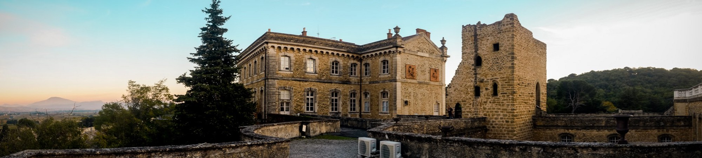
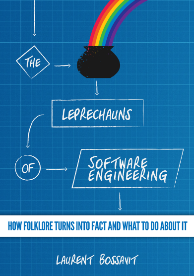
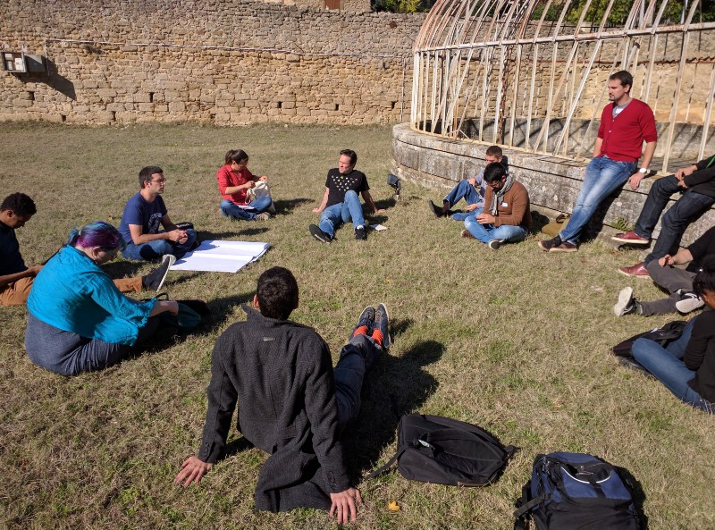
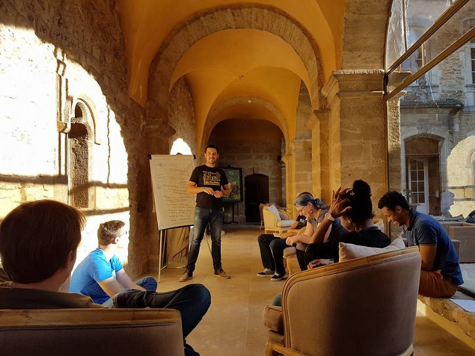

Back from SoCraTes France 2016

My second time in a Software Craftsmanship and Testing (SoCraTes) conference and, as always, it has been an awesome experience.

The self-made agenda
SoCraTes is a non-conference, which means that there’s no predefined agenda, but instead it is created every day by the participants (the image above is the agenda of day 2). Everybody is more than welcome to propose sessions. They can be presentation of something you know, or open discussion about a topic you are curious about, or more simply a session where you want to learn something and you are looking for someone more experienced to help you. As for the Global Day of Coderetreat, what you learn during SoCraTes is your responsibility. Open mind, will to learn and the Law of Two Feet are the only things you have to bring with you to this event.
Sessions I attended:
event storming and DDD. I never got into both subjects so it’s been a nice introduction.
Functional philosophy. Functional programming is the first item in my todo list since too long and after this excellent presentation I decided to enroll in the course on Coursera. For the second time.
How to teach TDD. Help other people to learn is something I really love to do. We shared experience and techniques on how to introduce TDD to other people/colleagues and it was interesting. Even though, inevitably, it switched to a broader discussion about organizational issues. But still, interesting.
Event sourcing. Again, another subject I never studied. So, good introduction.
Feature branching is evil. Thierry has a good experience as technical coach and he’s a passionate guy. He prepared this interesting presentation the night between day 1 and day 2 . Obviously the topic was sensible for many people, so the discussions were very interesting.

Tactical DDD. Another presentation that made me understand how I absolutely don’t know anything at all about DDD and that it is such a huge topic.
Beyond Alchemy and What are Software Leprechauns (by @cceelen and Laurent Bossavit). Laurent is the author of The Leprechauns of Software Engineering. We discussed about the distance between the software industry and the scientific method. We work in an industry where most of the choices are too often made based on personal tastes and/or wrong assumptions. Also, the academics working on empirical software engineering most of the time lack of real data and statistics from the real world. We work in an industry that it’s like Alchemy. What if the software craftsmanship community could help the academics to get these data? Or what if all of us could start applying the scientific method to the choices we make every day? What if we could document all the things we do, the practices and the techniques we use at work, the good and bad results, and make them available for scientists so to start to make the industry grow? In the Software Craftsmanship movement we always talk about the Profession of Software Engineer, but how can we have a Profession if we don’t even have a museum of Computer History (or really very few of them in the entire world)? How many of you, computer scientists, have ever been to such a museum? How much do we know about our History as computer scientists? How much do we know about the History of all the things that we choose to use? Listening to Laurent Bossavit has been maybe the most fascinating experience for me in the entire event. His book here below is already in my kindle.

Instill Software Craftsmanship in a company. Well, this is basically what I’m doing since one year in my current company. I attended this interesting session to get feedback from other people doing the same in their ones and share our experience with them. 
Learning Strategies (by me). One of the questions I’m always been asked when I say that it’s good to always try to practice and become better software developers is “yes, but we have a family/children/life/friends/whatever and we don’t have time”. I organized this session to know how other people do. Most of the people use their working time to study. Either because their company give them a dedicated time to do so during the week, or because they take their time by themselves. Avoid those companies that don’t give you time to become better employees. 
Code katas. Romeu organized code katas every lunch and dinner. Basically, every time there was an empty space in the agenda. I did a couple of them and they were absolutely fantastic! Definitely something I will do again with other things I organize. Romeu gave us so many brilliant ideas!

Other things worth mentioning
The food. Absolutely gorgeous. When the plates arrived on the table there was always this moment of religious silence when everybody was too focused to taste those absolutely gorgeous dishes.

Conclusions
It’s always great to meet the other people of the international community of Software Craftsmanship. It’s an absolutely open, welcoming, friendly, warm group of great people. As always I learned so much stuff, but maybe the most important is the amount of energy and strength that I always bring with me after this gathering. If you have never participated, please, join us in one of the next ones. You won’t regret it, and it will become kind of addiction too. Thanks to the excellent Houssam Fakih for the exceptional organization! And thanks to @franzi, the awesome facilitator of this event!